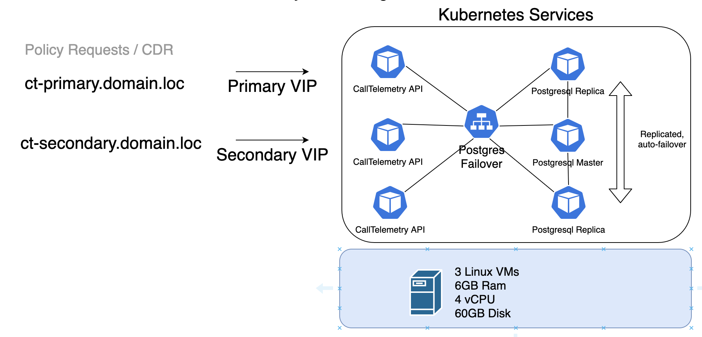
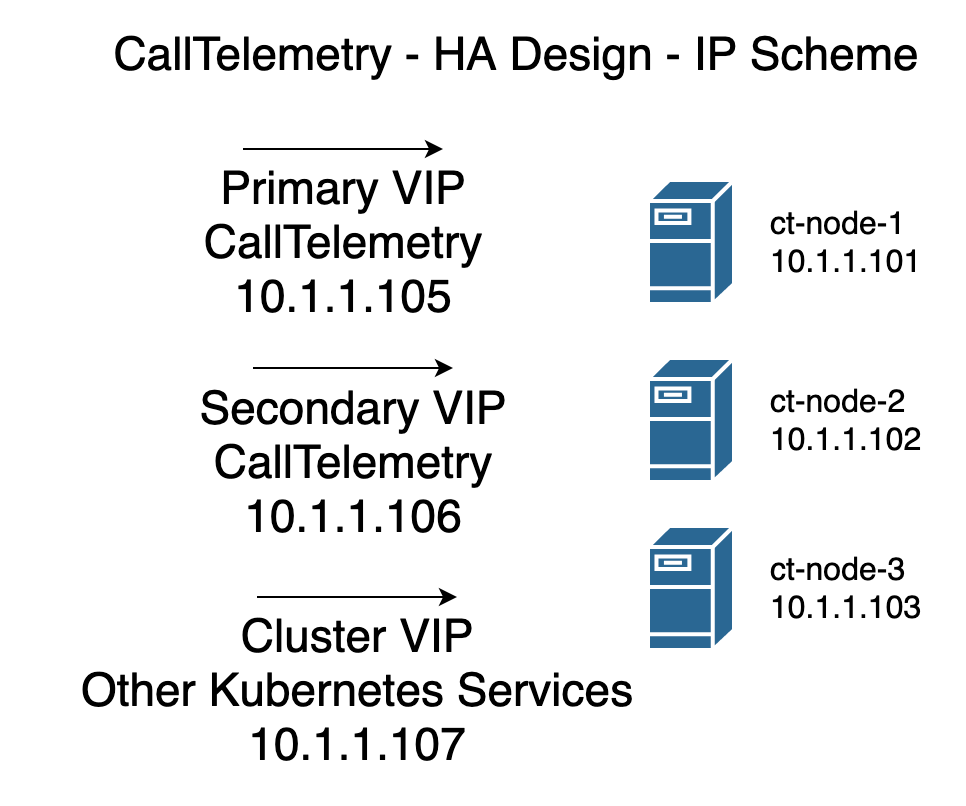

K3S Cluster Guide
Although it is a long page, the entire deployment is only about 30 minutes.
Architecture

IP Addressing

Deploy 3 or more CallTelemetry Cluster OVAs
Download CentOS 8.3 OVA File - 900MB
The OVA includes a couple utilities - helm, kubectl, k9s, and saves you a little time "building" the OS. It's prebuilt from CentOS 8.3 with all updates applied. You can install this on ANY linux distro, but the support required to do so is beyond my time.
I want to install CentOS myself - what's missing?
enable snaps
yum install -y epel-release yum install -y snapd yum install -y wget systemctl enable --now snapd.socket ln -s /var/lib/snapd/snap /snap snap wait system seed.loaded systemctl restart snapd.seeded.service
install kubectl and helm
snap install kubectl --classic snap install helm --classic
The nodes boot up and display their DHCP Address on login screen. SSH to the nodes on port 22. Default password is calltelemetry/calltelemetry
It's OK to Change the password - it's not used anywhere else.
Change hostnames!
If you do not set the hostname per node, you will not get very far without things failing.
I recommend ct-node-1, ct-node-2, ct-node-3, etc, but this is your choice.
sudo hostnamect ct-node-1
Static IP the NICs is recommended.
in CentOS you can static the NICs like this
sudo nmtui
Install First K3s Master Node
Time: about 2 minutes Copy and paste this via SSH on the first node.
export INSTALL_K3S_CHANNEL=stable
export K3S_KUBECONFIG_MODE="0644"
export K3S_TOKEN="calltelemetry"
curl -sfL https://get.k3s.io | sh -s server --cluster-init --no-deploy traefik --disable servicelb
rm -rf .kube
mkdir .kube
sudo cat /etc/rancher/k3s/k3s.yaml > ~/.kube/config
Install K3s Masters 2 and 3
Time: about 5 minutes
Change the K3S_URL IP address to Master node 1's IP Address
export K3S_URL="https://192.168.123.167:6443"
export INSTALL_K3S_CHANNEL=stable
export K3S_TOKEN="calltelemetry"
export K3S_KUBECONFIG_MODE="0644"
curl -sfL https://get.k3s.io | sh -s server - --no-deploy traefik --disable servicelb
rm -rf .kube
mkdir .kube
sudo cat /etc/rancher/k3s/k3s.yaml > ~/.kube/config
sudo cat /var/lib/rancher/k3s/server/node-token
Check the health of the nodes before continuing - all should say running.
calltelemetry@hp-k3s-1:~$ kubectl get nodes
NAME STATUS ROLES AGE VERSION
ct-node-1 Ready control-plane,etcd,master 4m36s v1.20.0+k3s2
ct-node-2 Ready control-plane,etcd,master 40s v1.20.0+k3s2
ct-node-3 Ready control-plane,etcd,master 19s v1.20.0+k3s2
calltelemetry@hp-k3s-1:~$
Install MetalLB, Scale DNS Pods, and Traefik Proxy
Time: about 5 minutes Copy and Paste this block
kubectl apply -f https://raw.githubusercontent.com/metallb/metallb/v0.9.5/manifests/namespace.yaml
kubectl apply -f https://raw.githubusercontent.com/metallb/metallb/v0.9.5/manifests/metallb.yaml
kubectl create secret generic -n metallb-system memberlist --from-literal=secretkey="$(openssl rand -base64 128)"
kubectl scale deployment.v1.apps/coredns --replicas=3 -n kube-system
helm repo add traefik https://helm.traefik.io/traefik
helm repo update
helm install traefik traefik/traefik --set service.annotations."metallb\.universe\.tf\/address-pool"=default
kubectl create namespace pgo
kubectl apply -f https://raw.githubusercontent.com/CrunchyData/postgres-operator/v4.5.1/installers/kubectl/postgres-operator.yml
curl https://raw.githubusercontent.com/CrunchyData/postgres-operator/v4.5.1/installers/kubectl/client-setup.sh > client-setup.sh
chmod +x client-setup.sh
cat <<EOF >> ~/.bashrc
export PGOUSER="${HOME?}/.pgo/pgo/pgouser"
export PGO_CA_CERT="${HOME?}/.pgo/pgo/client.crt"
export PGO_CLIENT_CERT="${HOME?}/.pgo/pgo/client.crt"
export PGO_CLIENT_KEY="${HOME?}/.pgo/pgo/client.key"
export PGO_APISERVER_URL='https://127.0.0.1:8443'
export PGO_NAMESPACE=pgo
EOF
source ~/.bashrc
In about 3-5 minutes, all pods in the cluster should be "Running"
[calltelemetry@ct-node-1 ~]$ kubectl get pod -A
NAMESPACE NAME READY STATUS RESTARTS AGE
default traefik-99bfb8458-9wjnc 1/1 Running 0 2m37s
kube-system coredns-854c77959c-6nf88 1/1 Running 0 2m59s
kube-system coredns-854c77959c-cg9vg 1/1 Running 0 8m10s
kube-system coredns-854c77959c-g9jbr 1/1 Running 0 2m59s
kube-system local-path-provisioner-7c458769fb-hpk77 1/1 Running 0 8m10s
kube-system metrics-server-86cbb8457f-lfswr 1/1 Running 0 8m10s
metallb-system controller-65db86ddc6-fmnvv 1/1 Running 0 2m59s
metallb-system speaker-j4xj5 1/1 Running 0 2m59s
metallb-system speaker-k84ln 1/1 Running 0 2m59s
metallb-system speaker-lrmj9 1/1 Running 0 2m59s
pgo pgo-deploy-clz5l 0/1 Completed 0 2m36s
pgo postgres-operator-7b94775688-dv6nm 4/4 Running 1 83s
[calltelemetry@ct-node-1 ~]$
Wait for postgres-operator to be running before continue
Deploy SQL HA with 2 Replicas
Time: About 5 minutes
Run SQL the Setup Script
(Run this on Node 1) Leave this window open after running the port-forward. You will have 2 windows open to Node 1.
./client-setup.sh
sudo mv .pgo/pgo/pgo /usr/local/bin
kubectl port-forward -n pgo svc/postgres-operator 8443:8443
Open a SSH window to the same node in a NEW window
You can change the SQL password here if you like.
pgo create cluster -n pgo ctsql -d calltelemetry_prod --replica-count 2 --password-superuser=calltelemetry
Check the status of the deployment by watching the pods deploy.
kubectl get pods -n pgo
NAME READY STATUS RESTARTS AGE
ctsql-6895cd4bb-2f524 0/1 ContainerCreating 0 21s
ctsql-backrest-shared-repo-7d4648f796-wxrqh 1/1 Running 0 32s
pgo-deploy-fpcq2 0/1 Completed 0 3m27s
postgres-operator-7b94775688-2sf4c 4/4 Running 1 2m14s
kubectl get pods -n pgo
NAME READY STATUS RESTARTS AGE
backrest-backup-ctsql-gnbvl 0/1 Completed 0 57s
ctsql-6895cd4bb-2f524 1/1 Running 0 118s
ctsql-backrest-shared-repo-7d4648f796-wxrqh 1/1 Running 0 2m9s
ctsql-iulc-75ccc767c7-wwd2k 0/1 Running 0 49s
ctsql-stanza-create-tkltr 0/1 Completed 0 66s
ctsql-yzgz-8689bb9998-c2mlf 0/1 Running 0 49s
pgo-deploy-fpcq2 0/1 Completed 0 5m4s
postgres-operator-7b94775688-2sf4c 4/4 Running 1 3m51s
# Check your Cluster
pgo test ctsql
cluster : ctsql
Services
primary (10.43.222.74:5432): UP
replica (10.43.246.172:5432): UP
Instances
primary (ctsql-6895cd4bb-2f524): UP
replica (ctsql-iulc-75ccc767c7-wwd2k): UP
replica (ctsql-yzgz-8689bb9998-c2mlf): UP
Deploy CallTelemetry
Time: About 2 minutes Copy and paste this into a text editor, edit it with your password if you changed it, and assign 2 static IPS for primary and secondary. Cluster IP start and end are not use for CallTelemetry, but helpful to be set.
This step creates a ct_values.yaml file in the local folder. Edit it on the server or in notepad. Paste this directly into the shell.
cat <<EOF > ct_values.yaml
# ct_values.yaml
db_password: calltelemetry
primary_ip: 192.168.123.135
secondary_ip: 192.168.123.136
cluster_ip_start: 192.168.123.138
cluster_ip_end: 192.168.123.140
EOF
helm repo add ct_charts https://storage.googleapis.com/ct_charts/
helm repo update
helm install calltelemetry ct_charts/calltelemetry -f ct_values.yaml
If you need to re-deploy new values, it is an upgrade instead - like this
helm upgrade calltelemetry -f ct_values.yaml
Check the deployment - you should see 3 CallTelemetry-web servers running.
kubectl get pods
NAME READY STATUS RESTARTS AGE
calltelemetry-web-fqlv5 1/1 Running 0 4m21s
calltelemetry-web-gp2f9 1/1 Running 0 4m21s
calltelemetry-web-zbkk6 1/1 Running 0 4m21s
svclb-traefik-4ngn8 2/2 Running 0 16m
svclb-traefik-6pmjw 2/2 Running 0 16m
svclb-traefik-chqsw 2/2 Running 0 16m
traefik-99bfb8458-8xdvj 1/1 Running 0 16m
Check your IPs assigned, you should see your IPs listed here
kubectl get services
NAME TYPE CLUSTER-IP EXTERNAL-IP PORT(S) AGE
calltelemetry-primary LoadBalancer 10.43.195.226 192.168.123.135 80:30609/TCP,22:32207/TCP 13m
calltelemetry-secondary LoadBalancer 10.43.122.52 192.168.123.136 80:32049/TCP,22:32124/TCP 13m
kubernetes ClusterIP 10.43.0.1 <none> 443/TCP 2d18h
traefik LoadBalancer 10.43.171.164 192.168.123.139 80:31050/TCP,443:30731/TCP 22h
Setup DNS records to point to your 2 IP Addresses - primary and secondary. Open a web browser to http://primary-ip and create an account.
Use these 2 records for the CURRI API, and the primary for the CDR desintation.
Appendix / Troubleshooting
If you need to find your SQL Password
In our case, the password for postgres user is calltelemetry
pgo show user -n pgo ctsql --show-system-accounts
CLUSTER USERNAME PASSWORD EXPIRES STATUS ERROR
------- ----------- ------------------------ ------- ------ -----
ctsql crunchyadm never ok
ctsql postgres calltelemetry never ok
ctsql primaryuser random_pass never ok
ctsql testuser random_pass never ok
SQL - Crunchy Data PostgreSQL Operator
Cruncy Data PostgreSQL Operator Github